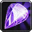
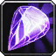

Le Chaman Restauration est une classe de soutiens qui soigne ses alliés, mais peux aussi faire de maigre dégâts avec des sorts. Il apporte plusieurs auras à son groupe.
C'est une classe nécessitant de l’anticipation dans la gestion des totems.
En PvP c'est une des spécialisation qui demande un certain placement, qui n'a pas vraiment de controle, mis à part un contre sort avec l'horion de terre. C'est une spécialisation qui a beaucoup de survie, surtout au corps à corps. En tant que healer votre positionnement lors d’un combat est décisif pour votre survie.
C'est une spécialisation viable autant en bg, qu'en arène (2c2, 3c3 et 5c5).
Vous pouvez jouer avec une arme à une main et un bouclier qui est le plus optimal.
 LES SORTS LES PLUS UTILISÉS
LES SORTS LES PLUS UTILISÉS
De soutiens
 Vague de soins inférieurs
Vague de soins inférieurs Salve de guérison (Utile en bg sur des groupes de personnes)
Salve de guérison (Utile en bg sur des groupes de personnes) Rapidité de la nature (combiné avec Vague de soins)
Rapidité de la nature (combiné avec Vague de soins) Bouclier de terre
Bouclier de terre Expiation
Expiation Bouclier d'eau
Bouclier d'eau Totem de Glèbe (Pour éviter de prendre un sort)
Totem de Glèbe (Pour éviter de prendre un sort) Totem de Séisme (couper cour à un fear)
Totem de Séisme (couper cour à un fear) Totem de Purification du poison (Super utile contre les voleurs)
Totem de Purification du poison (Super utile contre les voleurs) Totem de courroux de l'air
Totem de courroux de l'air Totem Fontaine de mana (En cas de mana faible)
Totem Fontaine de mana (En cas de mana faible) Totem de peau de pierre (peu utilisé mais peut être utile parfois contre des cac)
Totem de peau de pierre (peu utilisé mais peut être utile parfois contre des cac) Totem Furie-des-vents (Utile seulement si un guerrier allié est dans votre groupe et qu'il soit dans les parages)
Totem Furie-des-vents (Utile seulement si un guerrier allié est dans votre groupe et qu'il soit dans les parages)De dégâts
 Éclair
Éclair Chaîne d'éclairs
Chaîne d'éclairs Horion de flammes (empêcher qu'un rogue/druide se camoufle)
Horion de flammes (empêcher qu'un rogue/druide se camoufle) Arme de givre (Basé sur les dégâts des sorts)
Arme de givre (Basé sur les dégâts des sorts) Bouclier de foudre
Bouclier de foudre Totem incendiaire
Totem incendiaire Totem de Magma (décamoufler les rogues et druides)
Totem de Magma (décamoufler les rogues et druides)
 Les caps et stats
Les caps et statsRappel : Un cap par définition c'est la valeur à partir de laquelle vous n'avez plus aucun intérêt à monter une statistique.
Expliquées par ordre de priorité :
Le Bonus aux Soins
C'est une stat importante qui va monter vos sorts de soins. Cette stat n'a pas vraiment de cap. Vous allez la monter à la fois avec le stuff, les enchantements et les gemmes. Vous pouvez aussi ajouter un bijoux qui monte votre bonus aux soins.
Avec 1200 de bonus aux soins vous commencerez à être un vrai "heal". Avec 1600 de bonus aux soins vous commencerez à être bien. Ensuite avec le stuff vous ne monterez pas plus de 2100 de Bonus aux soins.
L'intelligence
Une stat de base super utile, qui augmente votre mana et aussi votre score de coup critique des sorts. C'est la stat que vous monter avec votre stuff et gemmes (enchantement est un choix pas forcement obligatoire).
Elle est ultra utile même en PvP, car grace au talent Bénédiction de la nature, qui fait en sorte que 30% de votre Intelligence vous augmente votre Bonus aux soins et AUSSI vos dégâts des sorts, Ce qui rend l'Intelligence Usefull.
Vous pouvez monter jusqu'à 11k mana max, ce qui va vous permettre déjà d'être à l'aise, mais 10K suffisent.
La regen mana/5sec
Stat utile pour un healer, c'est ce qui fera votre survie en terme de mana sur le long terme. Ce n'est pas une stat à prioriser par contre, car si vous êtes sans mana, il vous suffit de regen en hors combat. Si vous êtes en combat et sans mana, il y a le Bouclier d'eau et le Totem fontaine de mana (ou le Totem de Vague de mana) pour palier à ce problème.
C'est donc une stat à up avec le stuff, et quelques gemmes si vous ne montez pas l'intelligence.
La résilience
Cette stat est importante en PvP. Elle diminue les dégâts des sources de dégâts périodiques (DOT) et les chances de recevoir un coup critique. Diminue aussi les effets des drains de mana et les dégâts des coups critiques.
Pour faire simple le cap de la résilience est de 492.5, au dessus de 500, la résilience ne diminue plus les chances de recevoir un coup critique (diminué de 25% au max). Mais il n'y a pas de cap résilience pour la diminution des dégâts des DOT.
Il vous faudra 400 de résilience minimum pour déjà commencer à bien encaisser (Le Totem heal PvP peut être d'une grande aide). Vous pouvez mixer avec le stuff Elementaire (2 pièces, épaules et jambes sont le plus rentable) pour avoir le bonus du set (+35 résilience) et ainsi gagner légèrement en dps.
Rappelons que le chamheal en PvP, est là pour être agressif au dispell, decast, slow (voir dps) etc... pas simplement pour heal donc ce petit bonus de dégâts des sorts en plus ainsi que 35 resilience en plus peuvent être utile.
L'endurance
C'est la Stat de la survivabilité, assez importante en PvP. à monter en second plan à la fois avec le stuff mais aussi avec quelques enchantements. Niveau gemmes vous pouvez en mettre, si vous avez assez à votre gout de Intel / MP5
Il ne faut pas non plus trop la monter, à partir de 10k PV, vous en aurez assez. Vous pouvez monter au max à 11K.
Le critique des sorts
C'est la stat qui apporte un gros plus que vous allez monter avec le stuff uniquement. Inutile de gemmer / enchant critiques des sorts pour un chaman heal. Sachant qu'en plus vous gagnez en critique déjà avec l'intelligence.
Le score de hate des sorts
C'est ce qui vous réduit le temps d'incantation des sorts
Cette stat est utile au bout de 200 au score de hate, en dessous, cette stat est inutile. Si vous avez un stuff full PvP, atteindre ce score est carrément impossible, même en étant full gemmé et enchant hate. (vous atteindrez environ 140 au score de hate des sorts max)
Il vous faut pour le coup du stuff PvE obligatoirement pour arriver à avoir ce score de hate. Il n'y à pas vraiment de cap en heal.
Ici ce n'est pas notre objectif, car on a besoin de résilience pour pouvoir encaisser, donc cette stat si vous pouvez en avoir ne dites pas non, sans trop changer la valeur des autres caractéristiques. Inutile donc de gemmer et / ou enchant hate des sorts, car vous sacrifierez d'autres stat plus importante.
La hate c'est bien, mais ça bouffe la mana à une vitesse affolante, donc gardez bien à l'esprit qu'il faut bien équilibrer cette stat avec d'autres, en particulier l'intelligence ou la regen mana.
La pénétration des sorts
Cette stat ci comparé au toucher des sorts, évite les résistes adverse. C'est à dire que plus vous avec du score de pénétration, moins l'ennemi va "résister" à vos sorts.
Peu de joueurs ont une grosse résistance à la nature, inutile donc de trop monter cette stat. Il y a l'enchant sur cape de 20 pénétration qui suffit à vos besoins.
Autant dire que cela suffit, car il n'y a pas de "cap" à proprement dit. Inutile donc de gemmer pénétration des sorts.
Le toucher des sorts
Tout d'abord il faut comprendre que le toucher des sorts vous permet d'éviter "les ratés" quand vous lancer un sort (à ne pas confondre avec la pénétration des sorts).
En PvP contre une cible de même niveau vous devrez "théoriquement" avoir 4% de toucher des sorts. Mais le cap est néanmoins de 3%, car il y a 1% "incompressible", c'est à dire pas nullifiable via spellhit/talent/buff/etc... En heal vous êtes amené à dps peu, donc le score de toucher n'est qu'une stat optionnelle, et il ne vous est pas obligé de devoir la up.
 L'arbre de talent
L'arbre de talentAvant de commencer vous pouvez voir les talents chaman sur ce site
Les points importants dans la spé Restauration sont :
Totems gardiens (réduit le temps de recharge du Totem de Glèbe) Résistance (Augmente l'armure et réduit de 50% la durée des ralentissements)
Résistance (Augmente l'armure et réduit de 50% la durée des ralentissements) Guérison des anciens (Augmente l'armure après un heal critique) Focalisation des soins
Guérison des anciens (Augmente l'armure après un heal critique) Focalisation des soins Maîtrise totémique (allonge la portée des Totems bénéfique) Totems de restauration (Augmente le gain de mana et heal des Totems de mana et guérisseur)
Maîtrise totémique (allonge la portée des Totems bénéfique) Totems de restauration (Augmente le gain de mana et heal des Totems de mana et guérisseur) Esprit focalisé (contre les silences) Rapidité de la nature Bouclier de terre
Esprit focalisé (contre les silences) Rapidité de la nature Bouclier de terreVous pouvez cliquer sur les images pour les agrandir.
Le template le plus classique du chamheal est la 0/20/41, qui offre le plus de survie.

Vous pouvez opter pour cette variante

cette variante vous offre :
 Spécialisation Bouclier : Augmente de 5% les chances de bloquer les attaques avec votre bouclier et augmente de 25% le nombre de points de dégâts bloqués (5/5).
Spécialisation Bouclier : Augmente de 5% les chances de bloquer les attaques avec votre bouclier et augmente de 25% le nombre de points de dégâts bloqués (5/5).
Talent utile surtout contre les cac et chasseur, et qui vous permettra d'encaisser encore plus leurs attaques.
Bouclier de foudre amélioré : Augmente de 5% les dégâts infligés par les orbes de votre bouclier de foudre (1 points utilisé ici).
Talent qui augmente votre dps avec le Bouclier de foudre, utile si vous vous en servez pour dps.
 Maitrise des flots : Augmente les chances d'obtenir un effet critique avec vos sorts de soins et d'éclair de 1% (1 points utilisé ici).
Maitrise des flots : Augmente les chances d'obtenir un effet critique avec vos sorts de soins et d'éclair de 1% (1 points utilisé ici).
Talent qui augmente vos critiques des sorts et soins, un plus qui peut être rentable.
Vous perdez :
 Connaissance ancestrale : Augmente votre maximum de points de mana de 5% (5/5).
Connaissance ancestrale : Augmente votre maximum de points de mana de 5% (5/5).
La variante de cette spé est fait si vous manquez de toucher des sorts, et que vous faites du raté sur vos Horions de terre :
2.png)
J'ai rajouté cette fois-ci :
 Soutiens de la nature : Augmente vos chances de toucher avec les sorts et attaques de mêlée de 3%. (3/3).
Soutiens de la nature : Augmente vos chances de toucher avec les sorts et attaques de mêlée de 3%. (3/3).
Un talent plus PvE que PvP, mais si vous estimer que vous faites beaucoup de raté, il peut s'avérer utile.
Une variante dont je ne suis pas trop fan, car elle offre moins de survie sans le talent Résistance. C'est la 0/14/47 :

 Les gemmes
Les gemmesPour ce qui est des enchants et gemmes en gros il vous faut du Bonus aux soins principalement, de l'intelligence et si possible de la MP5 ou de l'endurance.
 Diamant tonneterre de puissance : +18 Endurance et 5% de résistance aux étourdissements
Diamant tonneterre de puissance : +18 Endurance et 5% de résistance aux étourdissements
Il vous faut 3 gemmes bleues pour pouvoir l'activer
 +11 aux soins, +4 dégâts des sorts, +5 Intelligence
+11 aux soins, +4 dégâts des sorts, +5 Intelligence +11 aux soins, +4 dégâts des sorts, +6 Endurance, ou  +11 aux soins, +4 dégâts des sorts, +2 points de mana toutes les 5 secondes (si vous préférez de la regen mana)
+11 aux soins, +4 dégâts des sorts, +6 Endurance, ou  +11 aux soins, +4 dégâts des sorts, +2 points de mana toutes les 5 secondes (si vous préférez de la regen mana) Diamant tonneterre de perspicacité : +12 Intelligence et une chance de restaurer des points de mana au lancement d'un sort (+300 mana)
Il vous faut 2 gemmes rouges, 2 gemmes jaunes et 2 gemmes bleues pour l'activer
+11 aux soins, +4 dégâts des sorts, +5 Intelligence +11 aux soins, +4 dégâts des sorts, +6 Endurance, ou +11 aux soins, +4 dégâts des sorts, +2 points de mana toutes les 5 secondes (si vous préférez de la regen mana) +18 aux soins et +6 aux dégâts des sorts, ou
+18 aux soins et +6 aux dégâts des sorts, ou  +22 aux soins et +8 aux dégâts des sorts
+22 aux soins et +8 aux dégâts des sorts Les enchantements
Les enchantementsPar ordre de priorité
Casque
Arcanum du gladiateur (+18 Endurance et +20 au score de résilience) Réputation Opération Soleil brisé Amical.
Arcanum du renouveau (+35 aux soins, +12 dégâts des sorts, +7 points de mana toutes les 5 sec.) Réputation Thrallmar / Bastion de l'honneur Révéré.
Epaules
Calligraphie superieures de discipline (+33 aux soins, +11 dégâts des sorts, +4 points de mana toutes les 5 sec.) Exalté Aldor
Calligraphie supérieure de l'orbe (+22 aux soins, +6 points de mana toutes les 5 sec.) Exalté Clairvoyant
Calligraphie de discipline (+29 aux soins, +10 dégâts des sorts) Honoré Aldor
Calligraphie de l'orbe ou de l'oracle (+13 score de critique des sorts ou +5 points de mana toutes les 5sec.) Honoré Clairvoyant
Torse
Résilience majeur (+15 Résilience)
Pts vie exceptionnels (+150 point de vie)
Carac. exceptionnelles (+6 à toutes les caractèristiques)
Brassards
Soins excellents (+30 aux soins, +10 dégâts des sorts)
Robustesse (+12 Endurance)
ou à la limite Intelligence majeure (+ 12 Intelligence)
Cape
Pénétration des sorts (+20 Pénétration des sorts)
Armure majeure (+120 Armure)
ou à la limite Résistance majeure (+7 à toutes les résistances)
Jambes
Craft par un Couturier
Fil ensorcelé doré (+66 aux soins, +22 dégâts des sorts, +20 Endurance)
Fil ensorcelé argenté (+46 aux soins, +16 dégâts des sorts, +15 Endurance)
Gants
Soins majeure (+35 aux soins, +12 dégâts des sorts)
Pieds
Vitesse du sanglier (+9 Endurance et augmentation de la vitesse de course)
Robustesse (+12 Endurance)
Bagues
Si vous avez enchantement
Pouvoir de guérison (+20 aux soins, +7 dégâts des sorts)
Arme
Soins majeure (+81 aux soins, +27 dégâts des sorts), le must have pour tous healer.
Bouclier
Endurance majeur (+18 Endurance)
Intelligence (+12 Intelligence)
Résilience (+12 Résilience) si vous avez moins de 450 résilience
Résistance (+5 à toutes les résistances)
 Combats face aux autres classes
Combats face aux autres classes Guerrier
Guerrier
Contre cette classe, il vous suffit de la ralentir constamment avec un Horion de givre rang 1 pour ne pas lui faire trop monter sa rage (ou rang max si votre but est de le tuer) et le Totem de lien terrestre. Evitez aussi de le frapper au corps à corps pour faire monter sa rage et qu'il vous face plus de dégâts. Lancer vos sorts de soins avec un fake cast au début (c'est à dire que vous allez simuler une incantation pour la stoper de vous même), car il va tenter de vous court circuiter en vous décastant avec une volée de coups ou un  coup de bouclier (les deux ont un temps de recharge associé).
coup de bouclier (les deux ont un temps de recharge associé).
Le mieux est de s'éloigner avec Loup fantôme, et jouer avec les reliefs pour se cacher et pour ne plus avoir le débuff de la technique Frappe mortelle, qui diminue tout les heals de 50% pendant 10 sec, mais c'est presque infaisable contre un guerrier.
Il vous faut essayer de rester en contact avec lui le plus souvent et garder un Totem Fontaine de mana et un Bouclier de terre d'up s'il fait vraiment mal, sinon un Bouclier d'eau et un Totem guérisseur.
un Totem de peau de pierre, c'est toujours mieux que rien, car le Totem de lien terrestre ne servira pas à grand chose.
Placer un Totem de courroux de l'air, ça aidera sur le bonus heal, et donc sur votre Bouclier de terre, et votre Totem guérisseur mais surtout sur vos propres heals !
Si vous manquez de résilience, vous allez avoir de la difficulté. Le tout est de bien se placer pour pouvoir soigner ses alliés sans être à portée de l'ennemi.
Vous pouvez aussi ajouter un Totem de Séisme, si il commence à mourrir, pour vous sortir du fear qu'il risque de lancer. Mais n'oubliez pas qu'il faut le ralentir constamment, sinon il va en profiter pour se mettre légèrement à distance et vous charger avec son  Interception qui va vous
Interception qui va vous  étourdir pendant 3 secondes. L'idéal c'est de tourner à une portée maximale pour pas qu'il vous touche sans pour autant que la portée soit suffisante pour une de ses charges.
étourdir pendant 3 secondes. L'idéal c'est de tourner à une portée maximale pour pas qu'il vous touche sans pour autant que la portée soit suffisante pour une de ses charges.
 Paladin
Paladin
Si c'est un Heal :
Il vous faut faire gaffe aux incantations de soins à décast avec l'Horion de terre. Vous pouvez poser un Totem de Glèbe pour éviter de prendre un  Marteau de la justice et être étourdi.
Marteau de la justice et être étourdi.
Il vous faut bien dispell ses buffs et bénédictions, et le ralentir sans arrêt. Le taper au corps à corps peut le gêner dans l'incantation de ses sorts de  soins.
soins.
Une fois presque mort le paladin, va utiliser bouclier divin (bubule), ce qui le rend invulnérable, donc profitez en pour vous remonter la vie et / ou regen votre mana.
Si c'est un Paladin Vindicte(Palret) :
Il vous faut essayer de le kitting, donc Garder un maximum de distance entre lui et vous avec un Totem de lien terrestre et votre Loup fantôme.
Un Totem Fontaine de mana et Totem de courroux de l'air vous permettra d'avoir une bonne assise sur la longévité du combat.
Ne pas hesiter à claquer le  trinket PvP sur un Marteau de la justice qui vous étourdi pendant 5 secondes, c'est la seule chose vraiment enmmerdante qu'il puisse faire.
trinket PvP sur un Marteau de la justice qui vous étourdi pendant 5 secondes, c'est la seule chose vraiment enmmerdante qu'il puisse faire.
Vous pouvez toujours balancer des Horions de givre, et lui interrompre ses heals s'il en fait avec l'Horion de terre.
Le Paladin à une  bénédiction de liberté qui annule et empêche tous ralentissement, mais ce sort est dispellable avec Expiation. En plus de ça, il a de quoi dispel vos Horions (Inutile de lui mettre des Horions de flammes). Du coup il va falloir être plus malin pour le tenir à distance en jouant avec l'Horion de givre et le Totem de lien terrestre.
bénédiction de liberté qui annule et empêche tous ralentissement, mais ce sort est dispellable avec Expiation. En plus de ça, il a de quoi dispel vos Horions (Inutile de lui mettre des Horions de flammes). Du coup il va falloir être plus malin pour le tenir à distance en jouant avec l'Horion de givre et le Totem de lien terrestre.
Il aura le dessus sur vous, et vous serez obligé de vous heal plusieurs fois. Il vous controlera avec Repentir et le  Jugement de justice qui vous empêchera de vous déplacer vite en forme de Loup, mais sur la durée c'est vous qui gagnez si vous savez le fatiguer, car un palret tombe vite sans mana.
Jugement de justice qui vous empêchera de vous déplacer vite en forme de Loup, mais sur la durée c'est vous qui gagnez si vous savez le fatiguer, car un palret tombe vite sans mana.
Une fois presque mort le paladin, va utiliser bouclier divin (bubule), ce qui le rend invulnérable, donc profitez en pour vous remonter la vie et / ou regen votre mana.
Si c'est un Mageladin(Shockadin) :
Il vous faudra procéder à la même technique que le Palret. Mais attention les phases de dps du mageladin sont plus espacé, mais plus intense.
Ayant de gros dégâts des sorts, il va falloir faire en sorte qu'il ne se heal pas.
Une fois presque mort le paladin, va utiliser bouclier divin (bubule), ce qui le rend invulnérable, donc profitez en pour vous remonter la vie et / ou regen votre mana.
 Chaman
Chaman
Si c'est un Chaman Élémentaire :
Il vous faut avoir le dessus au niveau des décast avec l'Horion de terre, et tenter de pas vous faire décast grace au Totem de Glèbe. Essayez un fake cast pour qu'il rate ses décast aussi, et rester au cac pour gêner l'incantation de ses sorts et aussi pour dps avec le proc Arme de givre.
Si vous prenez chère, Jouez avec les murs pour temporiser.
Gardez votre Bouclier d'eau et Totem Fontaine de mana actif. Posez un Totem de lien terrestre aussi souvent que possible.
Si c'est un Chaman Amélioration :
Ralentissez le et Tenez le à distance en incantant des sorts et en le laissant vous décast volontairement, pour qu'il utilise son Horion de terre, comme ça il ne peux pas vous ralentir avec son Horion de givre, mais vous si. Tenez le à distance sinon il va tenter de vous ralentir avec son Totem de lien terrestre, placez aussi le votre si possible, sinon il aura le dessus sur vous au cac.
N'hésitez pas à vous heal, et à spam votre Totem de glèbe, car vous risquez de prendre pas mal de dégâts.
Si c'est un Chaman Heal :
Il vous suffit comme tout heal de gérer le décast des heals, et de placer votre Totem de Glèbe pour éviter que lui vous décast. N'hésitez pas à dispell son Bouclier de terre et casser ses Totems.
 Chasseur
Chasseur
Si c'est un Chasseur Survie ou Précision :
Ce qu'il vous faut c'est essayer soit de rester au corps à corps pour l'empêcher de trop vous dps en phase offensive, si vous n'êtes pas seul, ou alors utiliser les murs afin de passer le plus souvent possible hors de son champ de vision.
Gardez Bouclier d'eau de up quoi qu'il arrive et le Totem Fontaine de mana, le Totem de peau de pierre pour réduire les dégâts de son pet, et le Totem de courroux de l'air.
Vous pouvez poser un Totem de purification du poison et / ou utiliser Guérison du poison pour éviter les poisons du chasseur, notamment la  Morsure de vipère (à SURTOUT dispell le plus vite possible) qui vous pompe la mana ou le controle avec la Piqûre de wyverne.
Morsure de vipère (à SURTOUT dispell le plus vite possible) qui vous pompe la mana ou le controle avec la Piqûre de wyverne.
Si vous êtes au corps à corps il va falloir le ralentir avec l'Horion de givre et le Totem de lien terrestre, car le chasseur vous ralentira aussi avec  Coupure d'ailes et son Piège de givre.
Coupure d'ailes et son Piège de givre.
Si c'est un Chasseur spé Bête :
Il va vous mettre très chère, et il ne vous est pas possible de le ralentir une fois son Courroux bestial utilisé (il devient rouge). Du coup il vous faut, soit tuer son familier pour que le sort ne fasse plus effet, ce qui va être dure.
Soit, si ce n'est pas possible, il vous faut jouer la défense, et vous cacher jusqu'à ce que le sort prenne fin.
 Druide
Druide
Si c'est un druide spé Heal :
Le duide quand il se sent en danger peut se mettre hors distance et se heal facilement grace à sa  forme de voyage. Tout ce que vous pouvez faire c'est éviter son controle avec le sort
forme de voyage. Tout ce que vous pouvez faire c'est éviter son controle avec le sort  cyclone avec l'horion de terre, ou encore avec le Totem de Glèbe.
cyclone avec l'horion de terre, ou encore avec le Totem de Glèbe.
Il peut aussi vous décast avec sa  charge en forme d'ours.
charge en forme d'ours.
Au moment de se heal vous pouvez lui dispel quelques heal sur la durée, comme  Récupération ou
Récupération ou  Rétablissement. Par contre si il n'a qu'une Fleur de vie, ça ne sert à rien de lui dispel en continu. Vous flinguerez votre mana à le faire avant lui. Par contre si il a 3 stack de Fleur de vie, la oui vous pouvez mettre un coup d'Expiation.
Rétablissement. Par contre si il n'a qu'une Fleur de vie, ça ne sert à rien de lui dispel en continu. Vous flinguerez votre mana à le faire avant lui. Par contre si il a 3 stack de Fleur de vie, la oui vous pouvez mettre un coup d'Expiation.
Si c'est un druide Combat Farouche (Feral) :
Il vous faudra absolument le tenir éloigné de vous, toujours pareil avec votre Horion de givre et le Totem de lien terrestre. laissez un Totem de Glèbe pas loin, au cas où il voudrait vous controler avec un cyclone.
Il a la possibilité de vous controle avec  Estropier et de vous enchainer avec un cyclone, d'où l'utilité du Totem de Glèbe. Il peut lui aussi comme la spé heal, vous décast avec sa charge farouche en forme d'ours ou avec Estropier, utilisez dans ce cas un fake cast quand vous le voyez en forme d'ours.
Estropier et de vous enchainer avec un cyclone, d'où l'utilité du Totem de Glèbe. Il peut lui aussi comme la spé heal, vous décast avec sa charge farouche en forme d'ours ou avec Estropier, utilisez dans ce cas un fake cast quand vous le voyez en forme d'ours.
Ce qu'il vous faut absolument aussi, c'est le Totem incendiaire et un Horion de flammes actif, pour éviter qu'il se recamoufle si il vous controle (Evitez le totem incendiaire si vous êtes en arène par contre).
Gardez donc votre Bouclier d'eau + Totem Fontaine de mana ou Totem guérisseur de up et un l'Horion de givre et le Totem de lien terrestre + un Totem de Glèbe
Essayez de jouer avec les murs, car il pourra vous charger mais pas vous ralentir et Surveillez votre vie, car le feral à un bon dps quand même.
Si c'est un druide Équilibre ou DS (Dreamstate) :
La pareil attention aux cylones ! En spé équi ce qu'il risque de vous géner ce sont ses  Tréants (Force de la nature). Essayez donc de vous rapprocher au corps à corps pour le géner dans l'incantation de ses sorts, sinon il risque de vous dominer par son dps, car il combine à la fois du dps direct avec Colère et des Dots avec
Tréants (Force de la nature). Essayez donc de vous rapprocher au corps à corps pour le géner dans l'incantation de ses sorts, sinon il risque de vous dominer par son dps, car il combine à la fois du dps direct avec Colère et des Dots avec  Éeclat lunaire et Essaim d'insectes.
Éeclat lunaire et Essaim d'insectes.
Au moment de se heal vous pouvez lui dispel quelques heal sur la durée comme la spé heal.
De meme face à un moonkin, essayez de jouer avec les murs pour eviter qu'il vous envoie la sauce au niveau dps, si vous prenez chère.
Pensez à interrompre un maximum de sorts Et toujours enlever les buffs.
 Voleur
Voleur
Vous pouvez dès le début vous mettre en forme de loup, ce qui vous évite d'être  Assommé (Car cette technique ne marche que sur un humanoïde) et poser un Totem de purification du poison et le Garder toujours actif.
Assommé (Car cette technique ne marche que sur un humanoïde) et poser un Totem de purification du poison et le Garder toujours actif.
il faut Garder le Bouclier d'eau afin de ne pas galerer niveau mana et Garder un Totem de lien terrestre.
Essayer de mettre le Loup fantôme et de courir plus loin, afin de marquer une pause dans le combat et de regen tranquille.
La base c'est de ne jamais trinket (utiliser son bijou médaillon de la horde / de l'alliance) sur un  coup bas. Toujours le garder pour un
coup bas. Toujours le garder pour un  Aiguillon perfide (Ne pas l'utiliser sur le premier, à part si il y a plusieurs ennemis) Et si possible le garder absolument pour un
Aiguillon perfide (Ne pas l'utiliser sur le premier, à part si il y a plusieurs ennemis) Et si possible le garder absolument pour un  Cécité ou en cas de coup dur extrême.
Cécité ou en cas de coup dur extrême.
La diffulté ici, va être les décast à répétition que le rogue va vous mettre avec  coup de pied, il vous faut essayer de faire comme avec le guerrier, faire du fake cast et d'ensuite pouvoir se heal.
coup de pied, il vous faut essayer de faire comme avec le guerrier, faire du fake cast et d'ensuite pouvoir se heal.
Si vous voulez le dps faite le avec le Bouclier de foudre (le refresh à chaque fois qu'il est fini), le Totem incendiaire (à éviter si vous êtes en arène), l'horion de flammes, et au cac avec le proc Arme de givre, sur une phase offensive.
Il vous faut absolument le Totem de purification du poison et utiliser Guérison du poison pour pouvoir le tenir un minimum à distance.
Attention tout de même le Voleur peut aussi vous décast de loin (si il est bon) avec  Lancer mortel. Il a aussi
Lancer mortel. Il a aussi  Cape de l'ombre qui enlève tout les effets magique et y résiste pendant 3 sec à 90%, et
Cape de l'ombre qui enlève tout les effets magique et y résiste pendant 3 sec à 90%, et  Pas de l'ombre (Suivant la spé) pour se téléporter sur vous, ce qui peut vous mettre en difficulté.
Pas de l'ombre (Suivant la spé) pour se téléporter sur vous, ce qui peut vous mettre en difficulté.
Vous pouvez ajouter un Totem de courroux de l'air comme au dessus pour booster vos autres Totems et heals.
 Prêtre
Prêtre
Si c'est un prêtre Ombre (SP) :
Cette classe à un dps très important, c'est à dire de gros dégâts en peu de temps avec ses Dots.
Il risque de vous fear avec  Cri psychique plusieurs fois, donc n'oubliez surtout pas le Totem de Séisme. essayez de le tenir éloigné, et quand vous sentez qu'il se rapproche trop, c'est qu'il veut forcement vous fear. Il risque aussi de vous
Cri psychique plusieurs fois, donc n'oubliez surtout pas le Totem de Séisme. essayez de le tenir éloigné, et quand vous sentez qu'il se rapproche trop, c'est qu'il veut forcement vous fear. Il risque aussi de vous  Silence.
Silence.
A part tout ça, le prêtre va tenter de mettre plusieurs fois  Mot de pouvoir : bouclier, qui absorbe pas mal de dégâts, mais vous pouvez le dispel avec Expiation. N'hésitez pas à enlever aussi les soins sur la durée avec ce sort comme la
Mot de pouvoir : bouclier, qui absorbe pas mal de dégâts, mais vous pouvez le dispel avec Expiation. N'hésitez pas à enlever aussi les soins sur la durée avec ce sort comme la  Rénovation ou la Prière de guérison.
Rénovation ou la Prière de guérison.
Gardez votre Horion de terre disponible jusqu'à ce qu'il incant soit Attaque mentale, ou alors  Toucher vampirique pour le décast. N'hésitez surtout pas à mettre TOUS le temps votre Totem de Glèbe et de surveiller si votre Totem de Séisme soit toujours présent, car il risque de vouloir vous le détruire.
Toucher vampirique pour le décast. N'hésitez surtout pas à mettre TOUS le temps votre Totem de Glèbe et de surveiller si votre Totem de Séisme soit toujours présent, car il risque de vouloir vous le détruire.
Gardez un Bouclier d'eau de up et Totem Fontaine de mana. Jouez avec les murs comme d'hab pour ralentir le rythme du combat.
Si c'est un prêtre Heal (DP) :
Il risque de vous burn mana avec  Brûlure de mana, donc Pensez à casser ce sort absolument.
Brûlure de mana, donc Pensez à casser ce sort absolument.
Mais même problème que pour la spé ombre, toujours avoir le Totem de Glèbe et le Totem de Séisme actif.
Il vous faut absolument décast et dispel ses heals et Boucliers.
 Démoniste
Démoniste
Si c'est un démoniste Affli :
Même combat que le prêtre ombre, cette classe à un dps avec des Dots, il va vous falloir le Totem de Séisme et le Totem de Glèbe à gogo.
Si vous avez la possibilité de vous cacher pour vous heal avec Vague de soins inférieur, faites le. Sinon vous allez vite tomber.
Le plus important c'est de décast son Affliction instable et ses  Drains de vie, car sinon c'est gagné d'avance pour lui.
Drains de vie, car sinon c'est gagné d'avance pour lui.
La bête noir avec cette classe c'est sa  Malédition des langages, qui vous augmente le temps d'incantation des sorts de 60%, ce qui nous gène beaucoup. Et aussi le fait qu'il ai un fear instantané, comme le prêtre ombre, grace à
Malédition des langages, qui vous augmente le temps d'incantation des sorts de 60%, ce qui nous gène beaucoup. Et aussi le fait qu'il ai un fear instantané, comme le prêtre ombre, grace à  Hurlement de terreur amélioré.
Hurlement de terreur amélioré.
Laissez donc un Totem de lien terrestre, Toujours penser à garder son Bouclier d'eau, car le Bouclier de terre ne vous sera pas d'une grande aide.
Pensez à jouer avec les murs, c'est à dire de se trouver hors de son champ de vision afin, de ralentir le rythme du combat. Par exemple en arène sur les ruines de lordaeron, jouez autour du tombeau central en courant autour en loup fantôme, à nagrand tournez autour des poteaux, et dans les tranchantes courez sur le pont au milieu et sauter en bas et revenir en haut etc...
Si c'est un démoniste Lien spirituel ou Soul Link (SL) :
Même combat que le Affli, à part que le SL à ses dégâts subis partagé avec son pet. Ce qui le rend encore plus résistant. Il a aussi une plus grande résistance aux sorts.
Par contre il n'a pas de fear instant, et fait un peu moins de dps. La difficulté reste la même avec sa Malédiction des langages et son Drain de vie à surtout décast.
N'oubliez toujours pas votre Totem de Glèbe et Totem de Séisme et les autres Totems indiqué dans la spé Affli.
Si c'est un démoniste Destruction :
Cette fois, nous avons à faire à du dps direct, donc plus de dots (ou du moins beaucoup moins).
N'oubliez toujours pas votre Totem de Glèbe et Totem de Séisme.
Cette fois-ci l'Horion de terre pour décast va vous servir pour contrer son  Immolation. Car sans Immolation sur vous, il ne vous fera pas grand chose.
Immolation. Car sans Immolation sur vous, il ne vous fera pas grand chose.
Par rapport à au dessus, cette spé à un sort pour vous étourdir, pendant 2 secondes, qui est  Furie de l'ombre, et il peut s'en servir pour vous mettre l'Immolation.
Furie de l'ombre, et il peut s'en servir pour vous mettre l'Immolation.
Il peut vous mettre en diffulté avec sa Malédiction des langages aussi.
 Mage
Mage
Si c'est un mage spé Givre :
Tentez dès le début un fake cast, pour contrer son  Contresort, Sinon vous risquez de ne plus rien faire pendant 6 secondes. Essayez de mettre votre Totem de Glèbe qu'une fois que vous êtes gelé si possible, sinon au dernier moment. Car le mage va vite vous le détruire avec
Contresort, Sinon vous risquez de ne plus rien faire pendant 6 secondes. Essayez de mettre votre Totem de Glèbe qu'une fois que vous êtes gelé si possible, sinon au dernier moment. Car le mage va vite vous le détruire avec  Javelot de glace.
Javelot de glace.
Essayez de décast les Éclairs de givre le plus possible. Un fois un Contresort utilisé contre vous, il vous faut en profiter pour vous heal absolument. N'hésitez pas à trinket sur une Nova plutôt que sur un  Métamorphose (Sheep) si vous êtes focus, car une fois gelé, il a 50% de chance de faire un critique sur vous.
Métamorphose (Sheep) si vous êtes focus, car une fois gelé, il a 50% de chance de faire un critique sur vous.
Vous pouvez lui dispel sa  Barrière de glace avec Expiation.
Barrière de glace avec Expiation.
Jouez entre Bouclier de terre et Bouclier d'eau suivant si vous êtes focus ou pas. Si vous ne l'êtes pas gardez le Bouclier d'eau. Un Totem de lien terrestre vous sera fort utile avec un Totem Fontaine de mana / Totem Vague de mana, car la mana partira vite contre un mage.
Jouez avec les murs et Pensez à casser ses Métamorphoses (Sheeps).
Il va utiliser son  Bloc de glace une fois presque mort, ce qui le rend insensible à tout, mais ne peut pas attaquer. Profitez en pour tuer son élémentaire d'eau et / ou vous heal.
Bloc de glace une fois presque mort, ce qui le rend insensible à tout, mais ne peut pas attaquer. Profitez en pour tuer son élémentaire d'eau et / ou vous heal.
Si c'est un mage Feu ou Arcane/Feu :
Vous risquez de vite prendre chère, il vous faut absolument décast ses  Brûlures, sinon c'est la fin pour vous. Ici vous pouvez trinket sur un Métamorphose (Sheep). N'hésitez pas à spam votre Totem de Glèbe et à ralentir la cible le plus possible.
Brûlures, sinon c'est la fin pour vous. Ici vous pouvez trinket sur un Métamorphose (Sheep). N'hésitez pas à spam votre Totem de Glèbe et à ralentir la cible le plus possible.
La particularité de cette spé, à part son gros dps et son instant  Explosion Pyrotechnique, c'est qu'il peut vour ralentir avec sa Vague explosive et vont désorienter avec son
Explosion Pyrotechnique, c'est qu'il peut vour ralentir avec sa Vague explosive et vont désorienter avec son  Souffle du dragon (ne concerne pas la Arcane/Feu).
Souffle du dragon (ne concerne pas la Arcane/Feu).
N'hésitez pas à aller au cac l'embêter pour qu'il ne puisse pas caster.
Jouez entre Bouclier de terre et Bouclier d'eau suivant si vous êtes focus ou pas. Si vous ne l'êtes pas gardez le Bouclier d'eau. Un Totem de lien terrestre vous sera fort utile avec un Totem Fontaine de mana / Totem Vague de mana, car la mana partira vite contre un mage.
Jouez avec les murs et Pensez à casser ses Métamorphoses (Sheeps).
Il a aussi le Bloc de glace qu'il va utiliser une fois sur le point de mourrir, profitez en pour vous soigner.
Si c'est un mage Arcane ou Feu/Arcane :
Ce qui va vous déranger avec cette spé c'est sa  Lenteur. Qui en plus de ralentir votre vitesse de déplacement, va ralentir votre vitesse d'incantation des sorts. Il va falloir jouer avec l'environnement en évitant de se faire décast comme avec les autres spé, mais aussi spam le Totem de Glèbe et Horions de terre à chaque incantation qu'il fera.
Lenteur. Qui en plus de ralentir votre vitesse de déplacement, va ralentir votre vitesse d'incantation des sorts. Il va falloir jouer avec l'environnement en évitant de se faire décast comme avec les autres spé, mais aussi spam le Totem de Glèbe et Horions de terre à chaque incantation qu'il fera.
Vous pouvez aussi lui dispel son  Bouclier de mana pour éviter qu'il encaisse.
Bouclier de mana pour éviter qu'il encaisse.
Jouez entre Bouclier de terre et Bouclier d'eau suivant si vous êtes focus ou pas. Si vous ne l'êtes pas gardez le Bouclier d'eau. Un Totem de lien terrestre vous sera fort utile avec un Totem Fontaine de mana / Totem Vague de mana, car la mana partira vite contre un mage.
Jouez avec les murs et Pensez à casser ses Métamorphoses (Sheeps).
Une fois presque mort, il utilisera aussi sont Bloc de glace, profitez en pour vous soigner.
Légende :
[Button:1] = bouton gauche de la souris
[button:2] = bouton droit de la souris
[nomod] = bouton par défaut du clavier
[mod:alt] = alt + le bouton par défaut
[mod:shift] = shift + le bouton par défaut
[mod:ctrl] = controle + le bouton par défaut
Ces macros sont adapté pour quelqu'un qui joue à la souris, mais vous pouvez les adapter à votre sauce par exemple :
Avec l'Horion de givre, version à la souris
Bouton gauche Horion de givre rang max, bouton droit Horion de givre rang 1.
Version bind clavier :
[Touche par défaut] Horion de givre rang max, Alt+[touche par défaut] Horion de givre rang 1.
Pour un raccourci clavier il faut indiquer [nomod] pour la touche par défaut, et vous pouvez remplacer alt pour autre chose sur la deuxième ligne.
Notez aussi que si vous ne mettez aucun rang de sort, le rang maximum sera utilisé.
Horion de terre avec focus
Bouton gauche Horion de terre rang max sur notre cible actuelle, bouton de droite Horion de terre rang 1 sur le focus (Il vous faut pour ça un focus avec /focus). Targetlasttarget vous permet de recibler votre ancienne cible.
Activation du bouclier de terre + bijoux
Bouton gauche lance un bouclier de terre, bouton droit active votre bijoux, lance le Totem de courroux de l'air et lance le bouclier de terre. Il prendra en compte le bonus en fonction du moment du lancement et donc se booster.
Avec Totem de magma
Bouton gauche Totem magma rang max pour faire du dps, bouton droit de la souris Totem de magma rang 1 pour trouver un fufu camouflé et pas cramer ça mana.
Instant heal ou éclair
Bouton gauche éclairs instantané avec la rapidité de la nature, bouton droit heal instant. Ce genre de macro évite qu'on se fasse dispel la rapidité de la nature
Équiper un totem et / ou armes
/equip est fait pour switch d'armes ou de totems quand vous appuyez sur un sort. La partie en dessous vous permet si vous ciblez quelqu'un et que vous appuyez sur alt, que ça heal votre personnage.
Même chose pour le totem de Bouclier d'eau
Rien de particulier, juste de pouvoir équiper le totem qui concerne le Bouclier d'eau, qui peut être d'une grande aide.
Guérison du poison et Expiation
Ce sont deux sort de dispell que je vous conseil de regrouper. Bouton gauche vous permet d'utiliser Expiation, et bouton droit vous permet d'utiliser Guérison du poison.
Macro anti-rogue/feral
Vous pouvez la spammer dès que vous voyez un fufu en camouflage, la macro va vous permettre de cibler le premier ennemi et de lui appliquer l'horion de flammes
 Haut de page
Haut de page